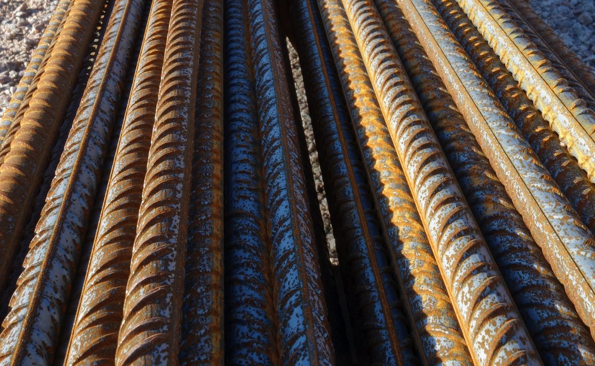
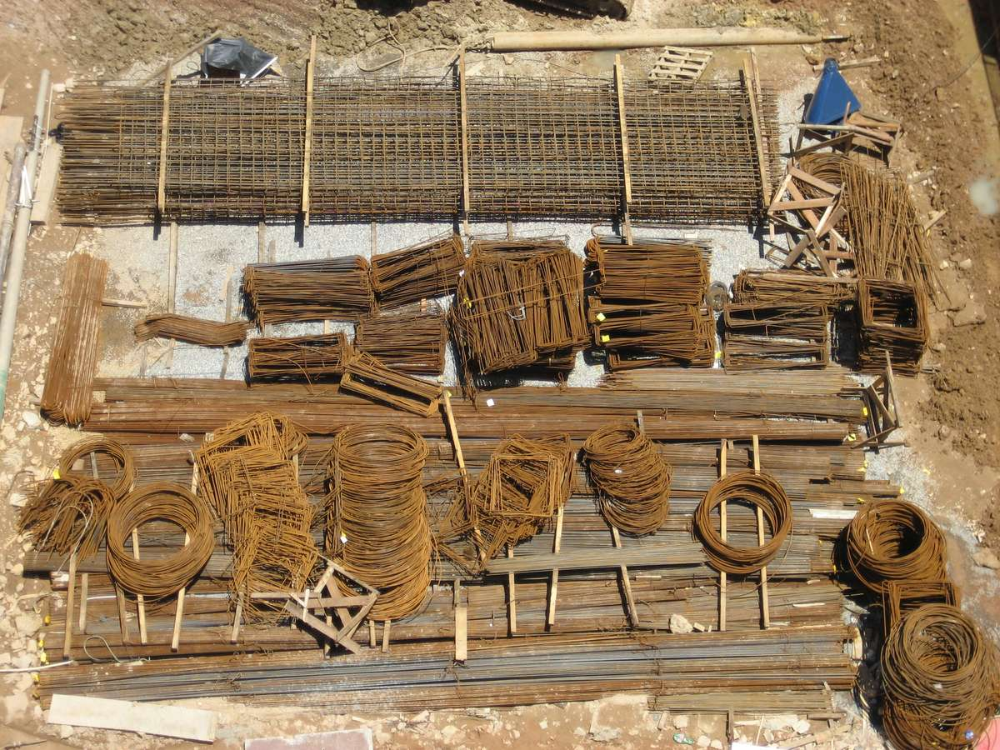
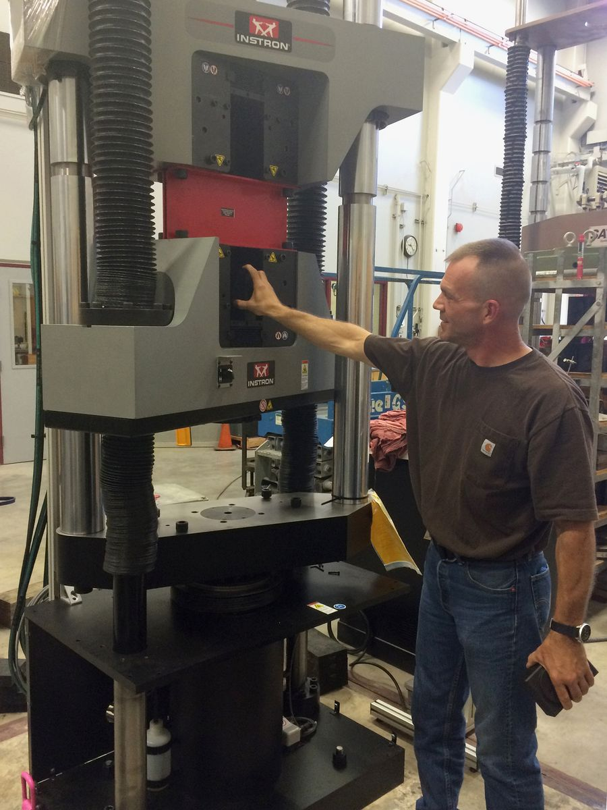
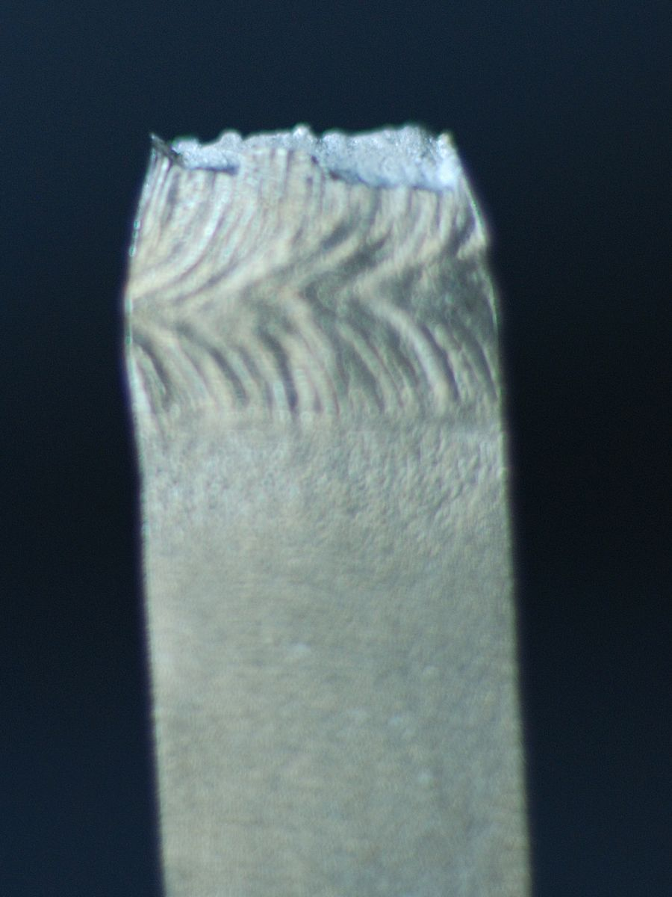
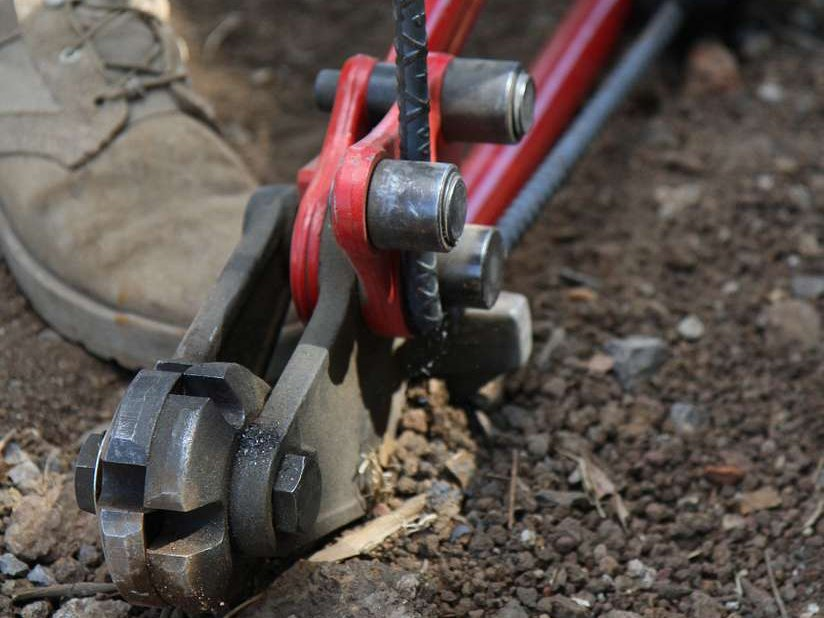

1What the bar has to do

Concrete carries compression well and tension badly, so every beam, slab and column has steel inside it to take the tension. The drawings call for that steel by one number: the grade. A Grade 60 bar is a bar whose specified yield strength, fy, is 60,000 psi (60 ksi). ASTM A615, the specification for deformed carbon-steel bars, defines Grades 40, 60, 75 and 80 (and, in its latest editions, Grade 100). Grade 60 is the everyday bar of North American construction; Grade 40 survives mainly in the small sizes.
Yield strength is the stress at which the bar stops behaving elastically and begins to stretch permanently — the number the design is built on. Tensile strength is the highest stress the bar carries before it breaks. Elongation is how much a marked 8 in. length has stretched when the bar is fitted back together after the break, as a percentage. The bend test wraps a bar 180° around a pin and looks for cracks.
Why four requirements and not one? Because the design uses only the first. A beam is proportioned so that its steel reaches fy before the concrete crushes; everything the bar can carry above fy is reserve. But the reserve is worth nothing unless the bar can stretch far enough to reach it. A bar that snapped at one percent strain would fail a beam without a crack or a sag to warn anyone. The elongation minimum and the bend test are there to guarantee the ductility the design assumes: the bar must be able to stretch several percent — many times its elastic strain — and still hang on.
The grade is a minimum, not a target. A Grade 60 bar that yields at 68 ksi is normal and accepted; one that yields at 59 ksi is rejected. The design counts on the minimum and treats the rest as reserve.
In one situation the reserve itself has to be bounded. Seismic design deliberately lets chosen bars yield and asks the rest of the structure to stay stronger than them; a bar much stronger than its grade defeats that plan by pushing the failure into the concrete or the joint. So ASTM A706, the low-alloy bar for welding and seismic detailing, sets a ceiling as well as a floor: Grade 60 yield between 60 and 78 ksi, tensile strength at least 80 ksi and at least 1.25 times the measured yield, and more elongation (14 % for the small sizes). ACI 318 requires A706 bars — or A615 bars that meet the same extra limits — in special seismic systems.
2Reading the bar

Bar sizes are numbers, and the number is the nominal diameter in eighths of an inch: a #5 bar is 5/8 in. across, a #8 bar is 1 in. That holds exactly up to #8. The five larger sizes are the round bars that replaced the old square ones — #9, #10, #11, #14 and #18 have the areas of 1, 1 1/8, 1 1/4, 1 1/2 and 2 in. square bars — which is why a #9 bar is 1.128 in. across rather than 1.125. Every size also has a nominal area and a nominal weight: those of a plain round bar of the nominal diameter, deformations not counted. The nominal area is what stress is figured on, in the laboratory and in the design office alike. The metric name is simply the diameter in millimetres.
| Bar | Metric name | Nominal diameter, in. | Nominal area, in.² | Nominal weight, lb/ft |
|---|---|---|---|---|
| #3 | #10 | 0.375 | 0.11 | 0.376 |
| #4 | #13 | 0.500 | 0.20 | 0.668 |
| #5 | #16 | 0.625 | 0.31 | 1.043 |
| #6 | #19 | 0.750 | 0.44 | 1.502 |
| #7 | #22 | 0.875 | 0.60 | 2.044 |
| #8 | #25 | 1.000 | 0.79 | 2.670 |
| #9 | #29 | 1.128 | 1.00 | 3.400 |
| #10 | #32 | 1.270 | 1.27 | 4.303 |
| #11 | #36 | 1.410 | 1.56 | 5.313 |
| #14 | #43 | 1.693 | 2.25 | 7.65 |
| #18 | #57 | 2.257 | 4.00 | 13.60 |
Grade 40 bars are made in sizes #3 to #6 only. The two largest sizes, #14 and #18, are column bars; in the bend test they are bent 90° rather than 180°.
Every bar carries its identity rolled into one face, read in order along the bar: the producer's mill mark, the size number, a letter for the kind of steel — S for A615 carbon steel, W for A706 low-alloy steel, both letters for a bar certified to both — and the grade. Grade 60 is shown as a "60" or as one continuous longitudinal line running through at least five deformation spaces; Grade 75 as "75" or two lines, Grade 80 as "80" or three. A Grade 40 bar has no grade mark at all.
3The tension test, step by step (ASTM A370)


ASTM A370 is the general method for the mechanical testing of steel products; the rules particular to reinforcing bars sit in A615 itself. Two of them shape everything that follows. The bar is tested full size, ribs and all — it is never machined into a smooth coupon, because the bar in the beam is not smooth either. And stress is figured on the nominal area from Table 1, not on anything measured with a caliper. The machine has to be big enough to break the bar: a #11 Grade 60 bar reaches its 90 ksi minimum at about 140,000 lbf.
- Cut and mark. Cut a length long enough to fill both grips and leave a free length between them; in the middle of the free length, punch or scribe two gauge marks 8.00 in. apart. Eight inches is the gauge length for reinforcing bars — every elongation figure in A615 is "in 8 in."
- Grip it straight. The bar goes into wedge grips with its axis on the line of pull. A bar seated crooked is bent as well as pulled, and reads low.
- Pull slowly through yield. The standard caps the rate of straining through the yield region; a bar rushed through it shows a higher yield than it has. On a bar with a sharp-kneed curve the load stops rising — the pointer halts, or the beam drops — while the bar keeps stretching. That load is the yield point by the halt-of-force method: yield strength = yield load ÷ nominal area.
- Or construct the offset. Higher grades usually have no plateau. With an extensometer on the bar the machine plots stress against strain; a line parallel to the elastic slope, offset by 0.2 % strain, is drawn, and where it meets the curve is the yield strength by the 0.2 % offset method. ACI 318-19 accepts either method — the offset for any bar, the halt of force only where the knee is sharp; the extension-under-load reading of earlier editions is no longer used.
- Pull to fracture. Past yield the machine may run faster. The load climbs again through strain hardening to a maximum, then falls as one spot thins into a neck, and the bar breaks there. Tensile strength = maximum load ÷ nominal area.
- Measure the elongation. Fit the two pieces together along their axis and measure between the gauge marks. Elongation = (final length − 8.00) ÷ 8.00 × 100, reported to the nearest 0.5 %. If the break falls near a gauge mark instead of in the middle portion and the elongation falls short, the result is discarded and another bar is tested.
Same slope, different knee. The modulus of elasticity is about 29,000 ksi for every grade of reinforcing steel — ACI 318 uses 29,000,000 psi for all of them. A Grade 80 bar is not stiffer than a Grade 40 bar; it simply yields later. A higher grade buys strength, not stiffness: deflections and crack widths do not shrink with it.
4Worked example: a #5 Grade 60 bar
A #5 bar from a heat marked Grade 60 is pulled in the laboratory. Its nominal area is 0.31 in.² (Table 1). The example numbers are made up but typical; each result is compared with the A615 minimum for a #5 Grade 60 bar.
| Quantity | Measured | Result | A615 minimum (#5, Grade 60) | Verdict |
|---|---|---|---|---|
| Yield strength | Load halted at 21,100 lbf | 21,100 ÷ 0.31 = 68,065 psi → 68.1 ksi | 60 ksi | meets |
| Tensile strength | Maximum load 31,000 lbf | 31,000 ÷ 0.31 = 100,000 psi → 100.0 ksi | 90 ksi | meets |
| Elongation in 8 in. | Gauge marks 9.04 in. apart after fracture | (9.04 − 8.00) ÷ 8.00 = 13.0 % | 9 % | meets |
| Bend | 180° around a 2.19 in. pin (3½ × 0.625 in.) | No cracks on the outside of the bend | pin 3½ d, no cracks | meets |
The bar yields eight ksi above its grade, breaks at a stress a tenth above the tensile minimum, and stretches well past the required 9 %: an ordinary, accepted Grade 60 bar. Mills run comfortably above the minimums, and they must — a heat that yielded at 59 ksi would be rejected as Grade 60, whatever its tensile strength.
| Grade | Yield strength, ksi | Tensile strength, ksi | Elongation in 8 in., % | ||||
|---|---|---|---|---|---|---|---|
| #3 | #4–#6 | #7, #8 | #9–#11 | #14, #18 | |||
| Grade 40 | 40 | 60 | 11 | 12 | — | — | — |
| Grade 60 | 60 | 90 | 9 | 9 | 8 | 7 | 7 |
| Grade 75 | 75 | 100 | 7 | 7 | 7 | 6 | 6 |
| Grade 80 | 80 | 105 | 7 | 7 | 7 | 6 | 6 |
Grade 40 is made in sizes #3 to #6 only. The elongation minimum eases with bar size and with grade: the price of a stronger bar is a little less stretch.
5The bend test

The tension test measures ductility along the bar; the bend test measures it where bars are actually asked for it — in hooks, stirrups and ties. A specimen is bent 180° (90° for #14 and #18) around a pin whose diameter is a set multiple of the bar diameter, and passes if the outside of the bend shows no cracks. The pin is not generous: around a 3½ d pin the outer surface of the bar is stretched by roughly d ÷ (D + d), about 22 % — more than the tension test asks of the whole bar. A brittle heat, or a bar with a seam or a rolling defect, shows itself here.
| Bar size | Grade 40 | Grade 60 | Grade 75 | Grade 80 |
|---|---|---|---|---|
| #3, #4, #5 | 3½ d | 3½ d | 5 d | 5 d |
| #6 | 5 d | 5 d | 5 d | 5 d |
| #7, #8 | — | 5 d | 5 d | 5 d |
| #9, #10, #11 | — | 7 d | 7 d | 7 d |
| #14, #18 (90° bend) | — | 9 d | 9 d | 9 d |
A615 pins. A706 bars are bent around smaller pins, because more ductility is asked of them.
6Certificates, sampling and retests
Nobody pulls the bar that goes into the beam. What arrives with a delivery is a mill test report (the "cert"): for each heat of steel, the chemical analysis and the mechanical results — yield, tensile, elongation and the bend — for each bar size rolled from it. The mill tests every size from every heat, at least one tension test and one bend test, and the heat number on the report has to match the heat number on the bundle tag. A report without a matching tag certifies nothing about the bars in front of you.
When the specification calls for it — public work usually does — bars are also sampled on site or at the fabricator and sent to an independent laboratory: a length long enough for the grips and the 8 in. gauge, with spare for a retest, from each heat and size. The independent test is the check on the mill, not a replacement for the cert.
A615 does not treat one poor result as the last word. If a tension result misses a minimum by a small margin — the standard says how small — two more bars are taken from the same lot and both must pass. If the break landed outside the middle portion of the gauge length and only the elongation failed, the test is simply repeated. A failed bend likewise earns two more specimens, and again both must pass. What the standard does not allow is picking the best of several results, or testing bars until one passes.
A cert is a claim about a heat, not about the bar in your hand. Match the heat number on the tag to the report, and match the size and grade marks on the bar to both. Mixed heats in one bundle are a common way for an untested bar to reach the forms.
7Common mistakes
- Measuring the diameter. A caliper across the ribs gives a larger area than the nominal one, and dividing by it under-reports the strength. Stress on reinforcing bars is always figured on the nominal area of Table 1.
- Rushing through yield. The strain rate through the yield region is capped for a reason: a fast pull raises the apparent yield point, and a bar can be passed that would fail at the proper rate.
- Measuring elongation on one piece. The two halves must be fitted together and the distance between the original marks measured. A rule laid along one half, or marks that were never punched, produce a number that means nothing.
- Ignoring where it broke. A break close to a gauge mark with a low elongation is not a failed bar; it is a discarded test. A break close to a gauge mark with a passing elongation counts.
- Reading the grade from a rib. The grade line is a continuous longitudinal line through at least five deformation spaces. A single short mark, or the ordinary longitudinal rib, is not one. If in doubt, look for the number.
- Testing in the field with a pipe. Bending a bar around nothing, with a length of pipe over the end, is a far sharper bend than the test's pin; a crack there proves nothing about the heat, and a partly embedded bar bent that way may be damaged for good.
- Accepting a cert that does not match. A report for one heat says nothing about a bundle tagged with another, however good the numbers.
8Key takeaways
- The grade is the minimum yield strength in ksi; design counts on it and treats everything above it as reserve, and A706 caps that reserve where seismic design needs it.
- The bar is tested full size and stress is figured on the nominal area: yield load and maximum load over the area from Table 1, elongation in 8 in. with the pieces fitted together.
- Yield is read by the halt of the force on a sharp-kneed bar or by the 0.2 % offset on any bar; the elastic slope is the same 29,000 ksi for every grade.
- The bend test around a 3½ d to 9 d pin and the elongation minimum are the ductility guarantee; the mill cert is the evidence — and only if its heat number matches the tag.
Sources: ASTM A615/A615M (deformed and plain carbon-steel bars: bar sizes, tensile and bend requirements, markings, retests); ASTM A370 (mechanical testing of steel products); ASTM A706/A706M (low-alloy steel bars); ACI 318-19 §20.2.1.2 (yield strength determination) and §20.2.2.2 (modulus of elasticity). Rate limits, retest margins and test-frequency clauses are described qualitatively; consult the current edition for the numbers.
Photo credits: A bunch of rebar up close by W.carter, CC BY-SA 4.0; Rebar 01 by Vsolymossy, CC BY 3.0; A worker ties together reinforcing bar by Bill Dowell, U.S. Army, public domain; Universal testing machine by the Oregon Department of Transportation, CC BY 2.0; Rupture-traction-acier by Betienne, CC BY-SA 3.0; Rebar bender, CC0; all via Wikimedia Commons. The photos were resized, cropped and recompressed for the web.
{kind=link}
{kind=link}
{kind=link}
.jpg){kind=link}
{kind=link}
{kind=link}